Generalized Mixed Models module
3.0.0
Generalized Mixed Linear Models module of the GAMLj suite for jamovi
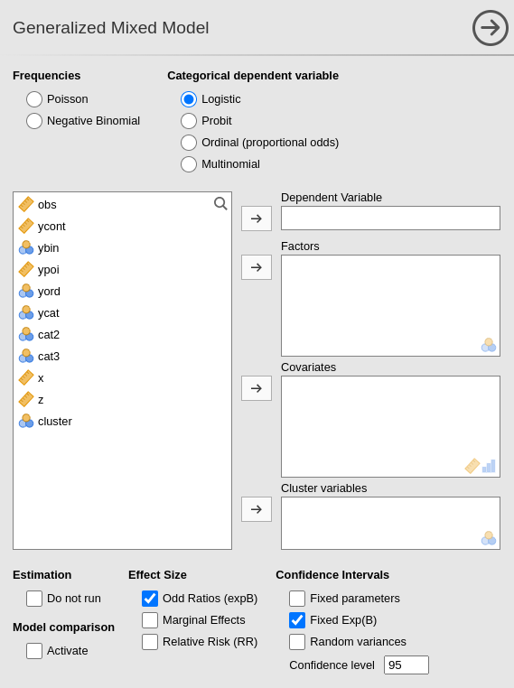
The module estimates generalized mixed linear models with categorial and/or continuous variables, with options to facilitate estimation of interactions, simple slopes, simple effects, post-hoc, etc. In this page you can find some hint to get started with the mixed models module.
Module
The module can estimate generalized linear mixed models for any combination of categorical and continuous variables, thus providing an easy way of obtaining multilevel or hierarchical linear models for any combination of independent variables types and a plethora of dependent variable types.
The module can estimate several mixed linear models:
- Poisson model
- Negative Binomial
- Logistic model
- Probit model
- Oridinal proportional odds
- Multinomial
For each model, any combination of categorical and continuous variables can be set as independent variables, thus providing an easy way for multiple regression, ANOVA-like, ANCOVA-like and moderation analysis for categorical and count dependent variables.
Estimates
The module provides parameter estimates of the fixed effects, the random variances and correlation among random coefficients.
Variables definition follows jamovi standards, with categorical independent variables defined in “fixed factors” and continuous independent variables in “covariates”.
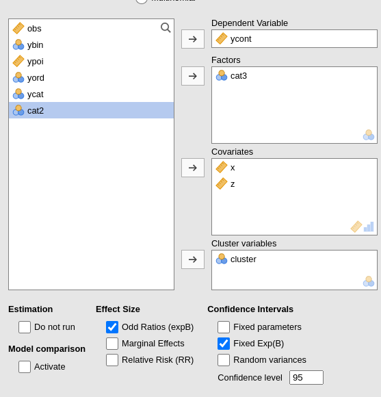
The grouping variable is simply set by putting the corresponding variable(s) into cluster. In this version, multiple clustering variables are possible, but not combinations of classifications. That can be easily solved by recoding the clustering variables ( see Technical Details ).
Confidence intervals for the parameters estimates and for the exponential of them (expB).
The actual estimation occurs when the dependent variable, the clustering variable and at least one random coefficient (random effect) has been selected.
| Do not run | If flagged, the results are not updated each time an option is changed. This allows settings complex model options without waiting for the results to update every time. Unflag it when ready to go. |
| Activate | Activates models comparison |
| Effect Size |
Effect size indices. Odd Rations (default) exponentiates
the coefficients. For dichotomous dependent variables
Relative Risk indices can be obtained.
Marginal Effects computes the marginal effects (if the
model allows).
|
| Coefficients |
TRUE (default) or FALSE , parameters CI in
table
|
| For exp(B) |
TRUE (default) or FALSE , exp(B) CI in table
|
| Random Variances C.I. |
TRUE or FALSE (default), random effects CI in
table. It could be very slow.
|
| Confidence level | a number between 50 and 99.9 (default: 95) specifying the confidence interval width for the plots. |
Fixed effects Model
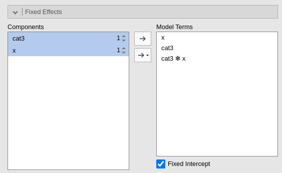
By default, the model fixed effects terms are filled in automatically for main effects and for interactions with categorical variables.
Interactions between continuous variables or categorical and continuous can be set by clicking the second arrow icon.
Polinomial effects for continuous variables can be added to the model. When a variable is selected in the Components field, a little number appears on the right side of the selection. The number indicates the order of the effect.

By increasing that number before dragging the term into the Model Terms field, one can include any high order effect. Increasing the order number and combining the selection with other variables allows including interactions involving higher order effects of a variable.
Random effects
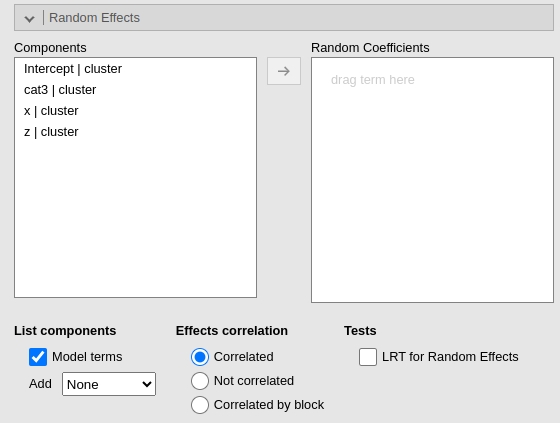
Random effects across clustering variables are automatically prepared
by the module following R lmer() standards: term | cluster
indicates that the coefficient associated with term is
random across cluster.
By default the module assumes correlated random effects. All the
effects varying across the same cluster variable appearing in the Random coefficients will be correlated. To obtain
a variance component model, select Not
correlated. A custom pattern of correlation can be obtained by
selecting Correlated by block. For instance, in Fig. below,
a custom structure has been defined by allowing the intercept and the
effect of x to be correlated, whereas the effect of
wfac is independent from the others.
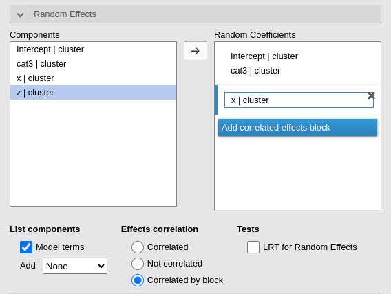
Other options are:
| Model terms | List in the random coefficients supplier the terms included as fixed effects |
| Add |
Listing of random coefficients in the supplier: none do not
add any term, otherwise add the selected terms.
|
| Effects correlation |
Random effects are assumed to be correlated (Correlated) or
independent (Not correlated). If
Correlated by block is selected, additional fields are
shown to create blocks of coefficients correlated within block and
independent between blocks.
|
| LRT for Random Effects | Compute LRT for the random effects |
Models comparison
When Model Comparison Activate is flagged, model comparison options become visible. Both for fixed effects
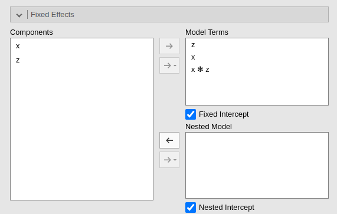
and for random effects.
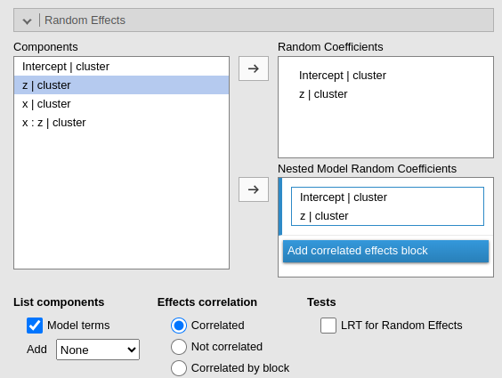
Two models will be estimated and compared. The current model defined
in by the Model Terms and the
Random Coefficients is compared with the the model defined
in the Nested Model and
Nested Model Random Coefficients. By default, the
Nested Model terms are empty and the
Nested Model Random Coefficients are filled with the full
model random terms, so a model without fixed effects is compared with
the current. When the user defines nested terms, the comparison is
updated.
Consider the following example:
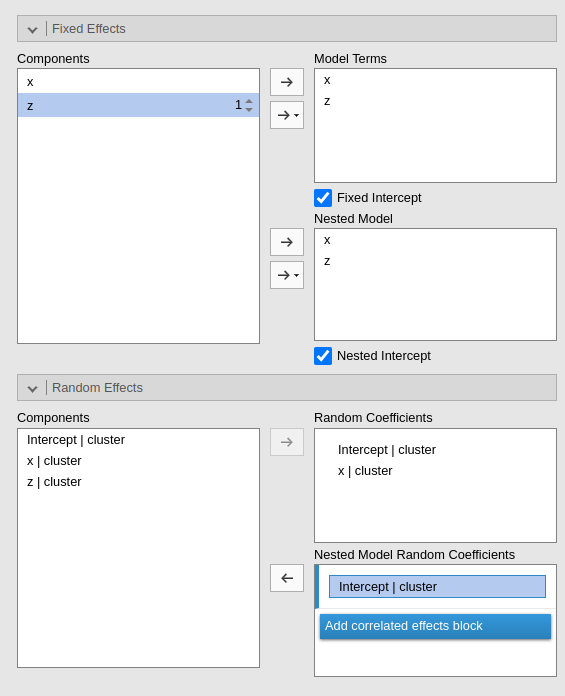
The current model is composed by three main effects (x,
z) and the random coefficients for (Intercept)
and x. The nested model terms are have the same fixed
effects, but it has only the random intercept. Thus, the loglikelihood
ratio test that it is performed to compare the models will test the
significance of the random effect of x. The output offers a
Table in which each model fit indices and tests are presented, and the
two models comparison test is presented.
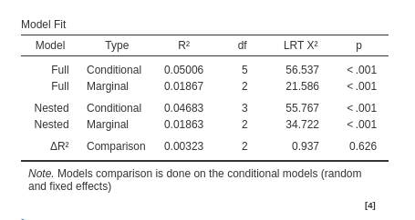
Factors coding

It allows to code the categorical variables according to different coding schemas. The coding schema applies to all parameters estimates. The default coding schema is simple, which is centered to zero and compares each means with the reference category mean. The reference category is the first appearing in the variable levels.
Note that all contrasts but dummy (and custom) guarantee to be centered to zero (intercept being the grand mean), so when involved in interactions the other variables coefficients can be interpret as (main) average effects. If contrast dummy is set, the intercept and the effects of other variables in interactions are estimated for the first group of the categorical IV.
Contrasts definitions are provided in the estimates table. More detailed definitions of the comparisons operated by the contrasts can be obtained by selecting Show contrast definition table.
Differently to standard R naming system, contrasts variables are always named with the name of the factor and progressive numbers from 1 to K-1, where K is the number of levels of the factor.
In reading the contrast labels, one should interpret the
(1,2,3) code as meaning “the mean of the levels 1,2, and 3
pooled together”. If factor levels 1,2 and 3 are all levels of the
factor in the samples, (1,2,3) is equivalent to “the mean
of the sample”. For example, for a three levels factor, a contrast
labeled 1-(1,2,3) means that the contrast is comparing the
mean of level 1 against the mean of the sample. For the same factor, a
contrast labeled 1-(2,3) indicates a comparison between
level 1 mean and the subsequent levels means pooled together.
Custom contrasts weights can be defined by first selecting custom for the variable of interest. Upon choosing
custom for a variable, a new field appears
and we can input the contrast weights we wish to test. Only one contrast
per variable can be defined, but if more contrasts are required one can
always run different analyses, one for each contrast. The coding weights
are input with the simple syntax w1,w2,w3. The other of the
weights follow the other of the factor levels in the datasheet.

More details and examples Rosetta store: contrasts.
Covariates Scaling
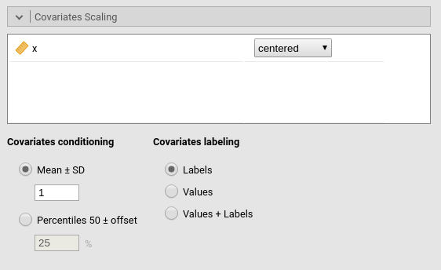
Continuous variables can be centered, standardized, cluster-based
centered, cluster-based standardized, log-transformed or used as they
are (none). The default is centered because it makes our lives much easier
when there are interactions in the model, and do not affect the B
coefficients when there are none. Thus, if one is comparing results with
other software that does not center the continuous variables, without
interactions in the model one would find only a discrepancy in the
intercept, because in GAMLj the intercept represents the expected value
of the dependent variable for the average value of the independent
variable. If one needs to unscale the variable, simple select
none.
Centered clusterwise and z-scores clusterwise center each score using the mean of the cluster in which the score belongs. For z-scores clusterwise the score is also divided by the cluster standard deviation. Log applies a simple natural logarithm transformation to the variable.
Covariates conditioning rules how the model is conditioned to different values of the continuous independent variables in the simple effects estimation and in the plots when there is an interaction in the model.
Mean+SD: means that the IV is conditioned to the \(mean\), to \(mean+k \cdot sd\), and to \(mean-k\cdot sd\), where \(k\) is ruled by the white field below the option. Default is 1 SD.
Percentile 50 +offset: means that the IV is conditioned to the \(median\), the \(median+k P\), and the \(median-k\cdot P\), where \(P\) is the offset of percentile one needs. Again, the \(P\) is ruled by the white field below the option. Default is 25%. The default conditions the model to:
\(50^{th}-25^{th}=25^{th}\) percentile
\(50^{th}\) percentile
\(50^{th}+25^{th}=75^{th}\) percentile
The offset should be within 5 and 50.
Note that with either of these two options, one can estimate simple effects and plots for any value of the continuous IV.
Covariates labeling decides which label should be associated with the estimates and plots of simple effects as follows:
Labels produces strings of the form \(Mean \pm SD\).
Values uses the actual values of the variables, after scaling.
Labels+Values produces labels of the form \(Mean \pm SD=XXXX\), where
XXXXis the actual value.Unscaled Values produces labels indicating the actual value (of the mean and sd) of the original variable scale. This can be useful, for instance, when the user needs the estimates to be obtained with centered variables (because there are interactions, for instance), but the plot of the effects is preferred in the original scales of the moderators.
Unscaled Values + Labels as the previous option, but add also the label “Mean” and “SD” to the orginal values.
The Scaling on option decides how the
scaling of the variables handle missing values: First, keep in mind that
the model will be estimated on complete cases, no matter how this option
is set. When there are missing values, however, one can scale each
variable only on the complete cases (the default), or scale
columnwise. If columnwise is selected, the
mean and standard deviation of each variable used to scale the scores
are computed with the available data of the variable, independently of
possible missing values in other variables.
Post-hocs
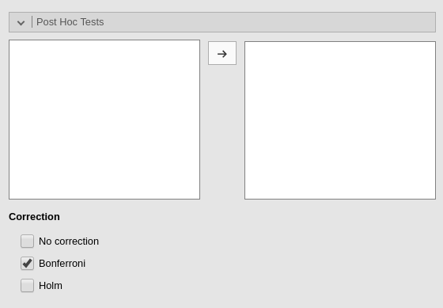
Post-hoc tests can be accomplished for the categorical variables groups by selecting the appropriated factor and flag the required tests
Post-hoc tests are implemented based on R package emmeans. All tecnical info can be found here
Plots
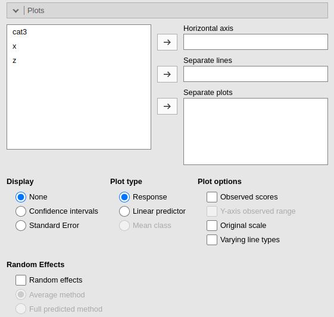
The “plots” menu allows for plotting main effects and interactions for any combination of types of variables, making it easy to plot interaction means plots, simple slopes, and combinations of them. The best plot is chosen automatically.
By filling in Horizontal axis one obtains the group means of the selected factor or the regression line for the selected covariate.
By filling in Horizontal axis and Separated lines one obtains a different plot depending on the type of variables selected:
- Horizontal axis and Separated lines are both factors, one obtains the interaction plot of group means.
- Horizontal axis is a factor and Separated lines is a covariate. One obtains the plot of group means of the factor estimated at three different levels of the covariate. The levels are decided by the Covariates conditioning options above.
- Horizontal axis and Separated lines are covariates. One obtains the simple slopes graph of the simple slopes of the variable in horizontal axis estimated at three different levels of the covariate.
By filling in Separate plots one can
probe higher-order interactions. If the selected variable is a factor,
one obtains a two-way graph (as previously defined) for each level of
the “Separate plots” variable. If the selected variable is a covariate,
one obtains a two-way graph (as previously defined) for the
Separate plots variable centered to conditioning values
selected in the Covariates conditioning
options. Any number of plots can be obtained depending on the order of
the interaction.
By flagging Random effects one obtains
the random effects estimated values in the plot along with the fixed
effects. In case of multiple cluster variables, the first cluster
variable in the cluster field of “variable role” panel is
used (if it is included in the model). To change the cluster variable
used to plot the random effects, change the order of the variables in
the “variable role” definition.
| Display |
'None' (default), Confidence Intervals, or
Standard Error. Display on plots no error bars, use
confidence intervals, or use standard errors on the plots, respectively.
|
| Y-axis scale |
Plot ordinal model predicted values in as probabilities
(response) or predicted class (mean.class)
|
| Observed scores |
TRUE or FALSE (default), plot raw data along
the predicted values
|
| Y-axis observed range |
TRUE or FALSE (default), set the Y-axis range
equal to the range of the observed values.
|
| X original scale |
If selected, the X-axis variable is scaled with the orginal scale of the
variable, independently to the scaling set is the
Covariates Scaling.
|
| Varying line types | If selected, a black and white theme is set for the plot, with multiple lines (if present) drawn in different styles. |
| Random effects |
TRUE or FALSE (default), add predicted values
based on random effect in plot
|
Estimated marginal means

Print the estimate expected means, SE, df and confidence intervals of
the predicted dependent variable by factors in the model. Any
combination available in the model (main effects, interactions,
non-linear terms), can be requested. If the term involves categorical
independent variables, means of each level of the variable are
presented. If the term involves continuous variables, expected means
computed at the levels defined in Covariate Scaling are
presented.
Options
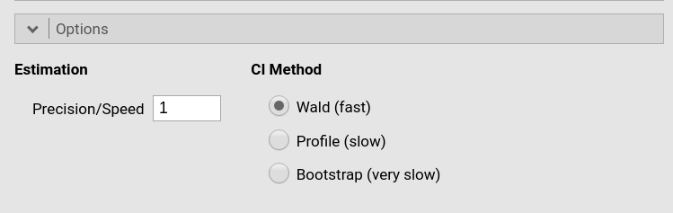
The precision/speed parameter applies to
mixed models with one random effect. Higher numbers increase precision
in the estimation with a speed cost. It corresponds to the
nAGQ parameter of glmer command in R package
lme4.
The CI method decides which method is used for computing confidence intervals. Wald uses Wald statistics and it is less precise than the other methods, but it is significantly faster. Profile is more precise but slower. Boot, bootstrap method, is the slowest. Details of the implementation can be found in lme4 manual
| CI Method | The method used to compute the confidence intervals. Standard uses the Wald method to compute standard errors and confidence intervals. Profile computes Profile Likelihood Based Confidence Interval, in which the bounds are chosen based on the percentiles of the chi-square distribution around the maximum likelihood estimate. Bootstrap performs parametric bootstrap, with Bootstrap rep repetitions. |
| Bootstrap rep. | The number bootstrap repetitions. |
| Predicted |
Saves the predicted values of the model. Predicted values are always
scaled in the dependent variable original scale, that in the majority of
cases is the probability scale. For Poisson models and
Negative Binomial the count scale is used.
|
| Residuals | Saves the residual values of the model. The response scale is used. |
| Remove notes | Removes all notes and warnings from the Tables. Useful to produce pubblication quality tables. |
Examples
Some worked out practical examples can be found here
Details
Some more information about the module specs can be found here
Comparison with other software
Return to main help pages
Main page
Comments?
Got comments, issues or spotted a bug? Please open an issue on GAMLj at github or send me an email